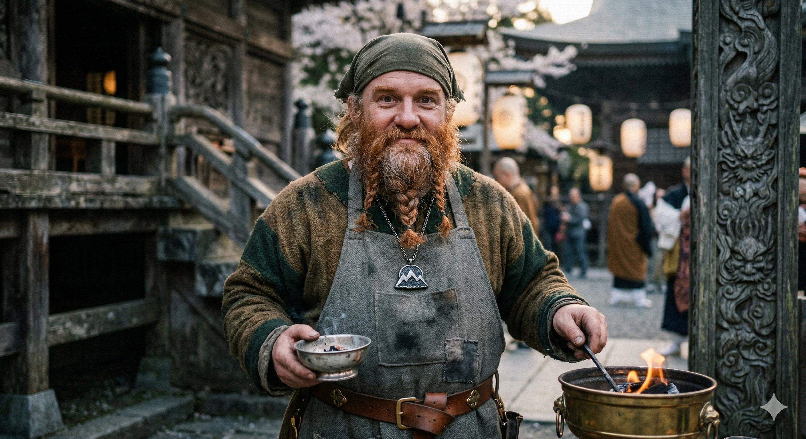
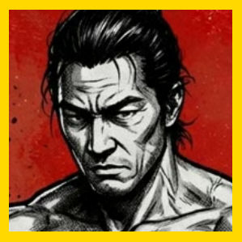
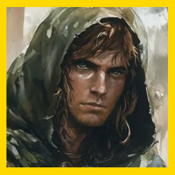
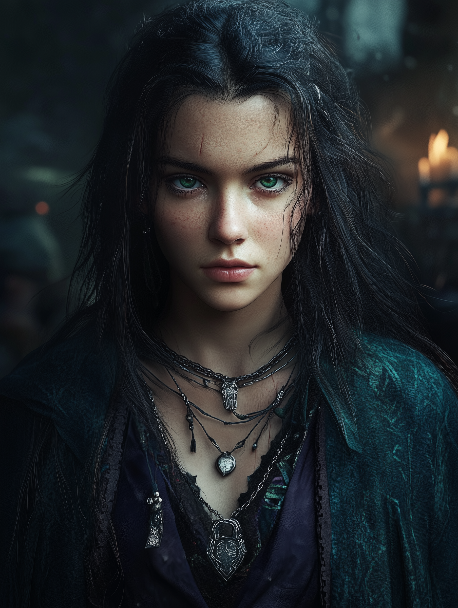
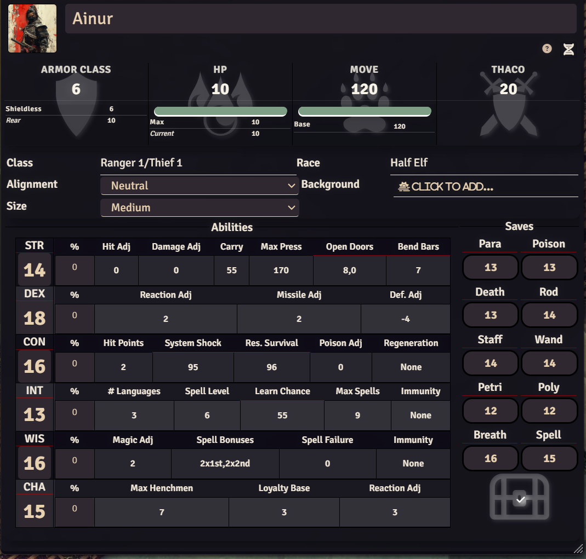
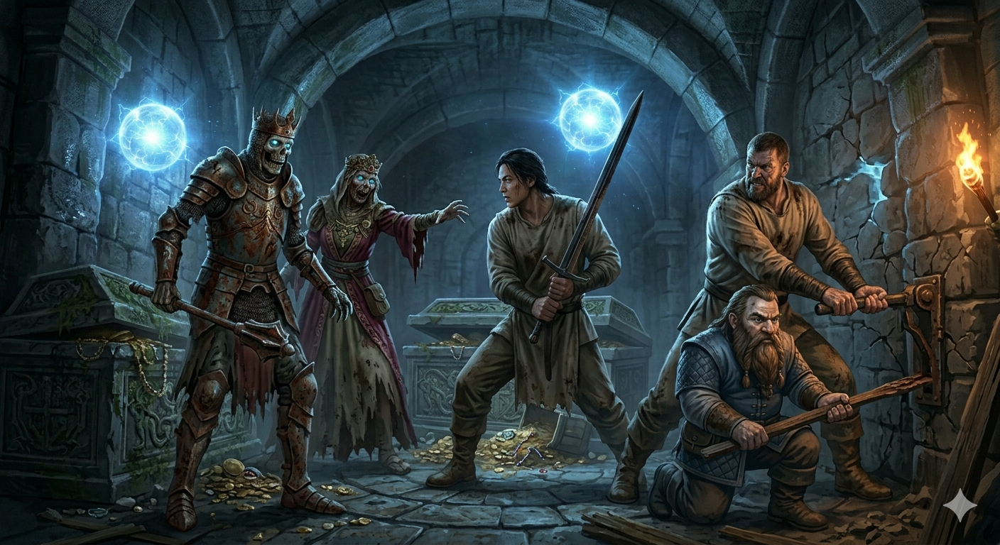

ClérigoKazgrim Iwakura (Kaz)
El Guardián de la Llama Perdida • Clérigo Cantero de Kagutsuchi
"El papel arde, pero la verdad es incombustible. Si el fuego lo devoró todo, es porque algo nuevo y más fuerte debe nacer de nuestras cenizas."
1. Tus Hitos: Lo que tú hiciste por el grupo
Aunque no estuvieras en todas las sesiones, cada vez que Kaz intervino, salvó la campaña de un wipe total:
Atrapados en un foso subterráneo a oscuras, heridos por ballestas y oyendo orcos arriba, te arrodillaste en el fango y canalizaste una esfera de luz divina azul crepitante que iluminó la mazmorra y les dio esperanza para sortear las trampas y huir.
En la dársena oculta, cuando un proyectil derribó a Hiroyuki y agonizaba ante una horda de orcos, invocaste las brasas de Kagutsuchi. La luz ígnea cerró sus heridas mortales justo a tiempo para escapar en el barco.
Tras semanas en silencio ("Kazllado"), llegasteis al nacimiento del río. Encajaste tu símbolo sagrado en la ranura de la roca y la montaña retumbó, abriendo el santuario olvidado que condujo a las aguas de Kanatsu-mi.
La Ciudadela Enana y la Forja Sagrada
Al volver a la posada de Milborne (Sesión XVI), conocisteis a El Viejo Oso, un veterano enano cojo y tuerto que os reveló el secreto de su juventud:
"De niño vivía en una ciudadela enana en las montañas. Los orcos nos echaron. Años después volví a reconquistarla y me rompieron la pierna... Pero antes de caer vi salones amplios, una forja que calentaba la piedra de toda la montaña, niveles profundos que nadie ha pisado... y en un valle oculto, escrituras idénticas a los monolitos de tu templo."
Lo que esto significa para Kaz: No es una simple mina abandonada. Es un Santuario Perdido de Kagutsuchi en las montañas de Thir. Tu dios te ha traído a este continente para reclamar esa forja y encender de nuevo la llama ancestral.
Códices Sagrados & Documentos Oficiales
Los tratados teológicos y las reglas canónicas de tu deidad Kagutsuchi (Dios del Fuego Primordial) y de Liryel (Tejedora del Velo) están disponibles para consulta directa:
2. Resumen Exprés de la Campaña (Actos I al IV)
Despertasteis encadenados en una playa tras el cataclismo que destruyó vuestra patria (Amatsukuni). Derrotasteis trasgos, fuisteis traicionados por el chambelán Keestake y escapasteis en La Galera del Príncipe justo cuando 12 tornados hundieron la isla en el mar.
Rescatados por el Rimed Mallow capitaneado por Mirna "La Loba". Cruzasteis el mar brumoso hasta arribar al continente de Thir.
Los 40 Refugiados: Vuestro pueblo sobrevive hacinado extramuros bajo el desprecio de las autoridades. Katsumi (clériga) y Kaito los cuidan.
Secuestro de Itarus: El noble niño Itarus fue secuestrado por sicarios del contrabandista Sutter Izen y el nigromante Zarcand.
La Torre de Zenopus: Asaltasteis la torre. Rescatasteis a Lady Thora, pero Glunt fue infectado con la Maldición de las Venas Negras. La máscara de bronce habló con la clave Anamnesis: la cura estaba en Kanatsu-mi.
Remontasteis el río, vencisteis al oso-búho, abriste la roca con tu símbolo sagrado y llegasteis al manantial sagrado. Glunt bebió de la fuente y la maldición se curó. De vuelta en Milborne, encontrasteis a Jelenneth y al Viejo Oso.
3. ¿Quién es quién? (Dramatis Personae)
Tus Compañeros Koonies

Glunt
Guerrero Protector (Fuerza 17)
Curado de las venas negras. Te admira.

Hiroyuki Watanabe
Samurai Kensei
Dilema: quiere volver a Elken por Itarus.

Sakura
Maga Kunita
Porta el Ojo de J'karaa y el grimorio.

Ainur
Explorador / Batidor
Le dio el colgante a Sakura para no ser blanco.
PNJs que debes conocer

El Viejo Oso (Enano Veterano)
Enano anciano en Milborne. Tuvo que huir de su ciudadela enana de niño y te ha revelado la existencia de la gran forja y escrituras de Kagutsuchi. Tu gran aliado.

Jelenneth (La Maga Samaritana)
Chica joven con capa azul, sanadora y aprendiz de Tauster. Hermana de corazón de Sakura. Os acompaña en Thurmaster.

Tauster (El Mago de Thurmaster)
Mago viejo, panzudo, brillante y paranoico. Identificó los objetos mágicos del grupo y os pide ayuda para conseguir una reliquia antes de que lo hagan sus enemigos. Quiere comprar el anillo de Zenopus.

Katsumi (Clériga de Shien)
Líder espiritual y custodia de los 40 refugiados kunitas en Elken. (El DM la utilizó como clériga de apoyo mientras tú estabas ausente).
4. ¿Dónde estamos ahora y qué hay que decidir?
📍 Ubicación: Milborne & Torre de Tauster (Thurmaster)
Acabáis de regresar de Kanatsu-mi. Glunt está curado, Tauster os ha pedido ayuda para una misión secreta con Jelenneth, y el Viejo Oso os ha soltado la bomba de la ciudadela enana.
Los 4 Dilemas sobre la Mesa
5. Consejos de Roleplay para tu Regreso
Di que durante las últimas semanas estuviste en comunión silenciosa con la roca ("*Kazllado*"), asimilando la pérdida de Amatsukuni. Pero que al oír al Viejo Oso hablar de la forja colosal y las escrituras del fuego, el dios Kagutsuchi ha encendido una brasa ardiente en tu pecho: "Se acabó el silencio. Los kami nos han traído aquí por una razón."
Hiro querrá bajar corriendo a Elken. Puedes decirle con calma enana: "Hermano, un martillo sin templar se quiebra contra el yunque. Si vamos a Elken ahora, somos cuatro forasteros contra un sindicato. Si subimos a la montaña y despertamos la forja, bajaremos armados con la bendición de los dioses."
Eres el Clérigo oficial. Tienes curaciones, milagros de luz, martillo contundente y la bendición del fuego de Kagutsuchi. No dudes en pedirle al DM tus espacios de conjuros al día antes de empezar la sesión.